2110A11 MANUAL GEARBOX WITH DIFFERENTIAL - R R FOR VERSIONS WITH HYDRAULIC SELECTION
- Path
- Procedures > 21 GEARBOX UNIT > 2110 MANUAL GEARBOX WITH DIFFERENTIAL > 2110A MANUAL GEARBOX AND DIFFERENTIAL ASSEMBLY > 2110A11 MANUAL GEARBOX WITH DIFFERENTIAL - R R FOR VERSIONS WITH HYDRAULIC SELECTION
- Kind
- repair procedure (removal / refitting; the operation number is the code)
- Applies to
- engines: 2.0 JTS; all production periods; only with equipment: Smart gearbox
- Interactive page
- https://sloeber94.github.io/elrnDB-aGt/en/#/125001237
Applies to: engines: 2.0 JTS; all production periods
 Removing
Removing
 Refitting
Refitting- Position the vehicle on a lift.
- Op. 1016A40 IGNITION COIL COVER ON CYLINDER HEAD- R+R
- Op. 1048A59 PIPE from flow meter to throttle casing hose - R.R.
- Op. 5530B10 BATTERY - R+R
- Op. 5530B52 BATTERY DRIP TRAY/SUPPORT - R.R.
- Op. 4450B02 LEFT FRONT WHEEL R R
- Op. 7055B90 LEFT FRONT WHEEL ARCH LINER - R.R.
- Op. 7055B54 UNDER-ENGINE GUARD - R R
- Op. 2127C40 HYDRAULIC SPEED SELECTION HYDRAULIC ACTUATOR UNIT AND CLUTCH - R R
- Undo the plug and drain the gearbox transmission fluid.
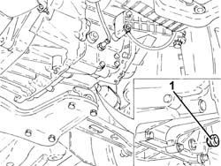
Applies to: engines: 2.0 JTS; all production periods
1. Undo the nut (1a) and disconnect the earth lead (1b).
Description | Connector | |
|---|---|---|
1b | Battery earth | See C1 BATTERY EARTH |
2. Disconnect the electrical connection from the reversing light switch.
Description | Connector | |
|---|---|---|
2 | Reversing lights switch | See I20 REVERSING LIGHTS SWITCH |
3. Disonnect the electrical connection to the electro-hydraulic selection gearbox input shaft speed sensor.
Description | Connector | |
|---|---|---|
3 | Gearbox output speed sensor | See K78 TRANSMISSION OUTPUT SPEED SENSOR |
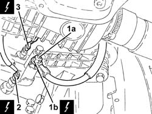
Applies to: engines: 2.0 JTS; all production periods
- Undo both upper starter motor bolts.
- Op. 0010T84 COOLANT FOR AIR CONDITIONING SYSTEM DEHYDRATE AND RECHARGE
- Op. 4450B04 RIGHT FRONT WHEEL R R
- Op. 5040A20 AIR CONDITIONER COMPRESSOR - R+R - INCLUDES FLUID LEVEL CHECK AND TOP UP IF NECESSARY
- Op. 5040A26 COMPRESSOR MOUNT - R R
- Op. 1076A48 CATALYTIC CONVERTER HEAT SHIELD - R R
- Op. 1080B62 CATALYTIC CONVERTER - R + R
- Fit the tool to support the power unit safely on the crankcase as shown in the figure.
Description | Code | |
|---|---|---|
1 | Bracket | 1.860.625.000 |
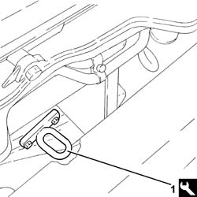
Applies to: engines: 2.0 JTS; all production periods
- Fit an appropriate bracket to support the power unit on the intake manifold in safety.
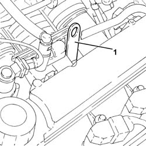
Applies to: engines: 2.0 JTS; all production periods
- Fit the tool complete with mountings blocks.
Description | Code | |
|---|---|---|
- | Crossmember | 1.820.581.000 |
Description | Code | |
|---|---|---|
- | Support mountings | 1.870.650.000 |
- Fit the tools and connect them to the previously fitted brackets using links.
Description | Code | |
|---|---|---|
- | Crossmember | 1.860.851.003 |
Description | Code | |
|---|---|---|
- | Vertical support | 1.870.748.000 |
- Undo the upper bolts fixing the manual gearbox and differential unit.
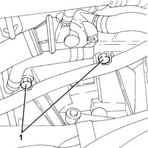
Applies to: engines: 2.0 JTS; all production periods
- Undo the bolts (1a) and disconnect the flanges for the driveshaft constant velocity joints (1b).
- Remove the safety plates.
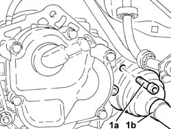
Applies to: engines: 2.0 JTS; all production periods
- Undo the bolt fixing the rigid pipe mounting collar for the exhaust pipe between the catalytic converter and the silencer to the bracket.
- Loosen the collar (2a) and remove the rigid pipe for the exhaust pipe between the catalytic converter and the silencer (2b).
- Remove the seal.
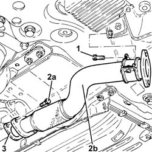
Applies to: engines: 2.0 JTS; all production periods
- Undo the bolt (1a) and the nut (1b) and remove the exhaust pipe mounting (1c).
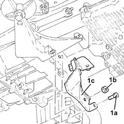
Applies to: engines: 2.0 JTS; all production periods
- Undo the bolt (1a) and the nut (1b) and remove the reinforcement link (1c).
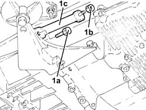
Applies to: engines: 2.0 JTS; all production periods
- Undo the bolts (1a) and remove the rigid power unit rear support (1b).
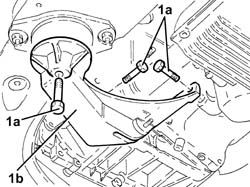
Applies to: engines: 2.0 JTS; all production periods
- Undo the bolts (1a) and remove the flexible mounting for the power unit rear support (1b).
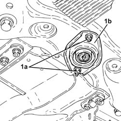
Applies to: engines: 2.0 JTS; all production periods
- Undo the front gearlever mounting bolts.
- Remove the shims.
- Loosen the rear bolts (3a) and unscrew the remaining gearlever mounting bolts (3b).
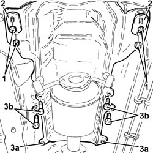
Applies to: engines: 2.0 JTS; all production periods
- Undo the remaining bolt (1a) and remove the starter motor (1b).
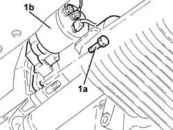
Applies to: engines: 2.0 JTS; all production periods
- Support the front suspension crossmember using a hydraulic jack with a mount.
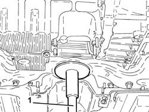
Applies to: engines: 2.0 JTS; all production periods
- Undo nuts (1a) and disconnect the front stabiliser bar joints (1b).
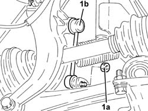
Applies to: engines: 2.0 JTS; all production periods
- Loosen the bolts securing the front anti-roll bar to the front suspension crossmember.
- Unscrew the power steering box bolts from the front suspension crossmember.
- Undo the bolts securing the lower wishbones to the forks.
- Unscrew the bolts securing the lower wishbones to the front suspension crossmember.
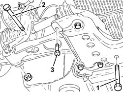
Applies to: engines: 2.0 JTS; all production periods
- Undo the remaining rear bolts fixing the front suspension crossmember to the bodyshell.
- Undo the bolts fixing the front suspension crossmember to the bodyshell.
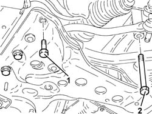
Applies to: engines: 2.0 JTS; all production periods
- Lower the hydraulic jack and remove the front suspension crossmember complete with stabiliser bar.
Applies to: engines: 2.0 JTS; all production periods
- Undo the bolts (1a) and remove the intermediate driveshaft (1b) from the differential.
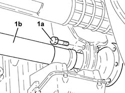
Applies to: engines: 2.0 JTS; all production periods
- Fit tool (1a) on a hydraulic jack (1b) and secure it to the gearbox with bolts (1c).
Description | Code | |
|---|---|---|
1a | Support | 1.860.859.000 |
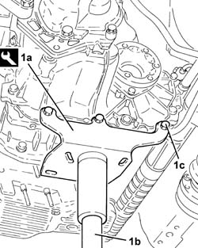
Applies to: engines: 2.0 JTS; all production periods
- Unscrew the bolt securing the gearbox end power unit rigid mount to the flexible block.
- Undo the bolts (2a), (2b) securing the power unit gearbox side rigid support to the gearbox.
- Remove the gearbox side rigid power unit support.
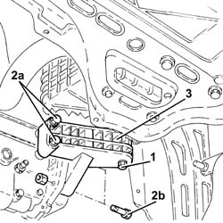
Applies to: engines: 2.0 JTS; all production periods
- Undo the remaining bolts fixing the manual gearbox and differential unit.
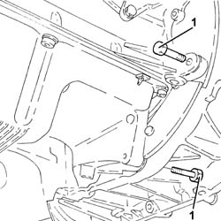
Applies to: engines: 2.0 JTS; all production periods
- Remove the gearbox by moving it away firstly from the engine and then lowering it using the hydraulic jack.
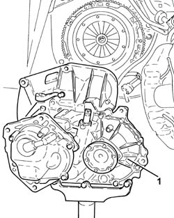
Applies to: engines: 2.0 JTS; all production periods
Refitting
Removing- Place the gearbox and differential back in its housing using the hydraulic jack and the support tool.
- Tighten gearbox bolts (1a) and (1b) to the specified torque.
Fastening | Component | Ø | Value (daNm) | |
|---|---|---|---|---|
1a | Bolt | MANUAL GEARBOX AND DIFFERENTIAL | M12 | (Engine crankcase side) 7.2 - 8.8 daNm |
Fastening | Component | Ø | Value (daNm) | |
|---|---|---|---|---|
1b | Bolt | MANUAL GEARBOX AND DIFFERENTIAL | M10 | (Crankcase sump side) 5.0 - 6.1, daNm |
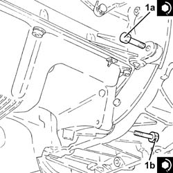
Applies to: engines: 2.0 JTS; all production periods
1. Place the power unit gearbox side rigid support (1a) in its housing and secure it tightening the bolts (1b) and (1c) to the recommended torque.
Fastening | Component | Ø | Value (daNm) | |
|---|---|---|---|---|
1b | Bolt | GEARBOX SIDE RIGID SUPPORT FOR POWER UNIT | M10 | (Gearbox side) 4.5 - 5.5 daNm |
Fastening | Component | Ø | Value (daNm) | |
|---|---|---|---|---|
1c | Bolt | GEARBOX SIDE RIGID MOUNT | M10 | (Gearbox side) 4.5 - 5.5 daNm |
Fastening | Component | Ø | Value (daNm) | |
|---|---|---|---|---|
2 | Bolt | GEARBOX SIDE RIGID MOUNT | (Flexible mounting side) |
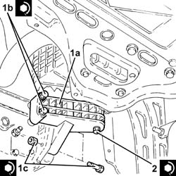
Applies to: engines: 2.0 JTS; all production periods
- Unscrew the bolts and separate the support tool from the gearbox, then replace after withdrawing from the hydraulic jack.
Description | Code | |
|---|---|---|
- | Support | 1.860.859.000 |
- Place the intermediate driveshaft (1a) in its housing and secure it tightening the bolts (1b) to the recommended torque.
Fastening | Component | Ø | Value (daNm) | |
|---|---|---|---|---|
1b | Bolt | INTERMEDIATE DRIVE SHAFT | (Mount side) |
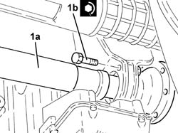
Applies to: engines: 2.0 JTS; all production periods
- Refit the front suspension beam with stabiliser bar using the hydraulic jack.
1. Tighten the front suspension crossmember side screws to the body to the specified torque.
Fastening | Component | Ø | Value (daNm) | |
|---|---|---|---|---|
1 | Bolt | ENGINE OR ROD ANCHORAGE BEAM | M12 | (Body side) 10.8 - 13.2 daNm |
2. Tighten the bolts (2a) and (2b) fixing the front suspension crossmember to the bodyshell to the recommended torque.
Fastening | Component | Ø | Value (daNm) | |
|---|---|---|---|---|
2a | Bolt | ENGINE OR ROD ANCHORAGE BEAM | M12 | (Body side) 10.8 - 13.2 daNm |
Fastening | Component | Ø | Value (daNm) | |
|---|---|---|---|---|
2b | Bolt | ENGINE OR ROD ANCHORAGE BEAM | M10 | (Body side) 8.1 - 9.9 daNm |
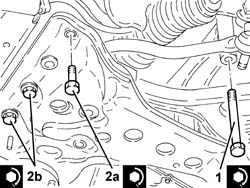
Applies to: engines: 2.0 JTS; all production periods
1. Tighten the bolts fixing the lower wishbones to the front suspension crossmember to the recommended torque.
Fastening | Component | Ø | Value (daNm) | |
|---|---|---|---|---|
1 | Bolt | LOWER FRONT TRACK CONTROL ARMS | M10 | (Front suspension crossmember side) 7.1 - 3.9, daNm |
2.Tighten the lower wishbone bolts to the forks to the specified torque.
Fastening | Component | Ø | Value (daNm) | |
|---|---|---|---|---|
2 | Bolt | LOWER FRONT TRACK CONTROL ARMS | M12 | (Fork side) 10.8 - 13.2 daNm |
3. Tighten the bolts fixing the steering box to the front suspension crossmember to the recommended torque.
Fastening | Component | Ø | Value (daNm) | |
|---|---|---|---|---|
3 | Bolt | COMPLETE POWER ASSISTED STEERING BOX | M14 | (Front suspension crossmember side) 11.7 - 14.3, daNm |
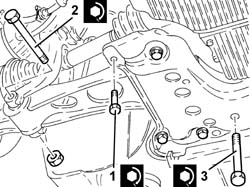
Applies to: engines: 2.0 JTS; all production periods
- Tighten the bolts fixing the front stabiliser bar to the front suspension crossmember to the recommended torque.
Fastening | Component | Ø | Value (daNm) | |
|---|---|---|---|---|
- | Bolt | FRONT ANTI-ROLL BAR | M8 | (Front suspension crossmember side) 3.6 - 4.4, daNm |
- Connect joints (1a) to the front stabiliser bara nd secure by tightening nuts (1b) to the specified torque.
Fastening | Component | Ø | Value (daNm) | |
|---|---|---|---|---|
1b | Nut | FRONT ANTI-ROLL BAR JOINTS | M10 | (Stabiliser bar side) 4.5 - 5.5 daNm |
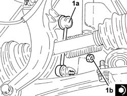
Applies to: engines: 2.0 JTS; all production periods
- Remove the hydraulic jack and the tool used to support the front suspension crossmember.
- Place the starter motor (1a) in its housing and secure it tightening the bolts (1b) to the recommended torque.
Fastening | Component | Ø | Value (daNm) | |
|---|---|---|---|---|
1b | Bolt | STARTER MOTOR | M8 | (Gearbox side) 2.4 - 3.0 daNm |
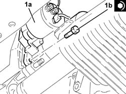
Applies to: engines: 2.0 JTS; all production periods
- Tighten the gear lever mount bolts.
- Refit the shims and tighten the front gear lever mount nuts.
- Place the power unit rear support flexible mounting block (1a) in its housing and secure it by tightening the bolts (1b) to the recommended torque.
Fastening | Component | Ø | Value (daNm) | |
|---|---|---|---|---|
1b | Bolt | POWER UNIT INTERM. FLEXIBLE MOUNTING BLOCKS | M8 | (Front suspension crossmember side) 3.2 - 3.9 daNm |
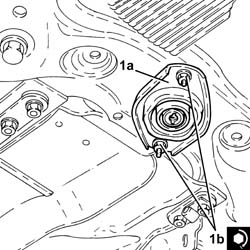
Applies to: engines: 2.0 JTS; all production periods
- Place the power unit rigid rear support (1a) in its housing and secure it tightening the bolts (1b, (1c) and (1d) to the recommended torque.
Fastening | Component | Ø | Value (daNm) | |
|---|---|---|---|---|
1b | Bolt | POWER UNIT REAR RIGID MOUNT | M12 | (Gearbox side) 7.2 - 8.0 daNm |
Fastening | Component | Ø | Value (daNm) | |
|---|---|---|---|---|
1c | Bolt | POWER UNIT REAR RIGID MOUNT | M12 | (Engine crankcase side) 6.8 - 8.3 daNm |
Fastening | Component | Ø | Value (daNm) | |
|---|---|---|---|---|
1d | Bolt | POWER UNIT REAR RIGID MOUNT | (Flexible mounting side) |
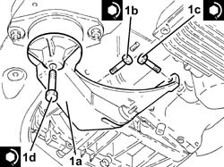
Applies to: engines: 2.0 JTS; all production periods
- Place the reinforcement rod (1a) in its housing and fasten it tightening the bolt (1b) and the nut (1c) to the recommended torque.
Fastening | Component | Ø | Value (daNm) | |
|---|---|---|---|---|
1b | Bolt | POWER UNIT REAR RIGID SUPPORT REINFORCEMENT LINKS | M12 | 7.2 - 8.8, daNm |
Fastening | Component | Ø | Value (daNm) | |
|---|---|---|---|---|
1C | Nut | POWER UNIT REAR RIGID MOUNT REINFORCEMENT LINK |
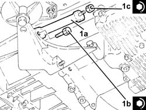
Applies to: engines: 2.0 JTS; all production periods
- Place the exhaust pipe mounting (1a) in its housing and fasten it tightening the bolt (1b) and the nut (1c) to the recommended torque.
Fastening | Component | Ø | Value (daNm) | |
|---|---|---|---|---|
1b | Bolt | EXHAUST PIPE RIGID MOUNT | M8 | 2.3 - 2.8, daNm |
Fastening | Component | Ø | Value (daNm) | |
|---|---|---|---|---|
1c | Nut | EXHAUST PIPE RIGID MOUNT | M8 | 2.3 - 2.8, daNm |
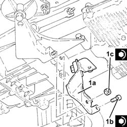
Applies to: engines: 2.0 JTS; all production periods
1. Place the rigid pipe for the exhaust pipe between the catalytic converter and the silencer (1a) complete with gasket (1b) back in its housing and secure it to the front exhaust silencer tightening the bolts (1c) to the recommended torque.
Fastening | Component | Ø | Value (daNm) | |
|---|---|---|---|---|
1c | Bolt | RIGID EXHAUST PIPE | M8 | (Front silencer side) 2.3 ÷ 2.8, daNm |
2. Tighten the bolt fixing the rigid pipe mounting collar for the exhaust pipe between the catalytic converter and the silencer to the bracket.
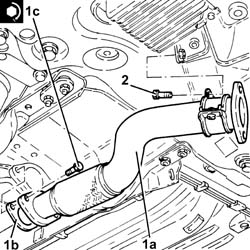
Applies to: engines: 2.0 JTS; all production periods
- Connect the driveshaft constant velocity joint flanges and tighten the new bolts to the specified torque.
Fastening | Component | Ø | Value (daNm) | |
|---|---|---|---|---|
1 | Bolt | DRIVESHAFT COMPLETE WITH JOINTS | M8 | (Intermediate driveshaft/inner differential shaft side) 3.6 - 4.4 daNm |
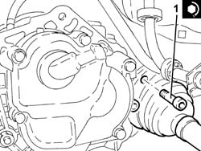
Applies to: engines: 2.0 JTS; all production periods
- Tighten the upper bolts securing the gearbox to the specified torque
Fastening | Component | Ø | Value (daNm) | |
|---|---|---|---|---|
1 | Bolt | MANUAL GEARBOX AND DIFFERENTIAL | M12 | (Engine crankcase side) 7.2 - 8.8 daNm |
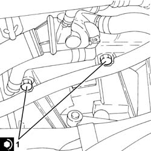
Applies to: engines: 2.0 JTS; all production periods
- Remove the tools used for supporting the power unit safely.
- Op. 1080B62 CATALYTIC CONVERTER - R + R
- Op. 1076A48 CATALYTIC CONVERTER HEAT SHIELD - R R
- Op. 5040A26 COMPRESSOR MOUNT - R R
- Op. 5040A20 AIR CONDITIONER COMPRESSOR - R+R - INCLUDES FLUID LEVEL CHECK AND TOP UP IF NECESSARY
- Op. 4450B04 RIGHT FRONT WHEEL R R
- Tighten the remaining starter motor bolts to the specified torque.
Fastening | Component | Ø | Value (daNm) | |
|---|---|---|---|---|
- | Bolt | STARTER MOTOR | M8 | (Gearbox side) 2.4 - 3.0 daNm |
- Connect the electrical connection to the electro-hydraulic selection gearbox input shaft speed sensor.
- Connect the electrical connection to the reversing light switch.
- Connect the battery earth lead and tighten the nut.
- Op. 0010T41 MANUAL GEARBOX OIL CHECK LEVEL AND TOP UP IF NECESSARY
- Op. 2127C40 HYDRAULIC SPEED SELECTION HYDRAULIC ACTUATOR UNIT AND CLUTCH - R R
- Op. 0010T47 HYDRAULIC SYSTEM FLUID FOR GEARBOX WITH HYDRAULIC SELECTION CHECK LEVEL AND TOP UP IF NECESSARY
- Op. 0010T48 HYDRAULIC SYSTEM FOR GEARBOX WITH HYDRAULIC SELECTION BLEED AIR
- Op. 7055B54 UNDER-ENGINE GUARD - R R
- Op. 7055B90 LEFT FRONT WHEEL ARCH LINER - R.R.
- Op. 4450B02 LEFT FRONT WHEEL R R
- Op. 5530B52 BATTERY DRIP TRAY/SUPPORT - R.R.
- Op. 5530B10 BATTERY - R+R
- Op. 1048A59 PIPE from flow meter to throttle casing hose - R.R.
- Op. 0010T84 COOLANT FOR AIR CONDITIONING SYSTEM DEHYDRATE AND RECHARGE
- Op. 1016A40 IGNITION COIL COVER ON CYLINDER HEAD- R+R
- Remove the vehicle from the lift.
Topics linked from this page (17)
- 0010T41 MANUAL GEARBOX OIL CHECK LEVEL AND TOP UP IF NECESSARY
- 0010T47 HYDRAULIC SYSTEM FLUID FOR GEARBOX WITH HYDRAULIC SELECTION CHECK LEVEL AND TOP UP IF NECESSARY
- 0010T48 HYDRAULIC SYSTEM FOR GEARBOX WITH HYDRAULIC SELECTION BLEED AIR
- 0010T84 COOLANT FOR AIR CONDITIONING SYSTEM DEHYDRATE AND RECHARGE
- 1016A40 IGNITION COIL COVER ON CYLINDER HEAD- R+R
- 1048A59 PIPE from flow meter to throttle casing hose - R.R.
- 1076A48 CATALYTIC CONVERTER HEAT SHIELD - R R
- 1080B62 CATALYTIC CONVERTER - R + R
- 2127C40 HYDRAULIC SPEED SELECTION HYDRAULIC ACTUATOR UNIT AND CLUTCH - R R
- 4450B02 LEFT FRONT WHEEL R R
- 4450B04 RIGHT FRONT WHEEL R R
- 5040A20 AIR CONDITIONER COMPRESSOR - R+R - INCLUDES FLUID LEVEL CHECK AND TOP UP IF NECESSARY
- 5040A26 COMPRESSOR MOUNT - R R
- 5530B10 BATTERY - R+R
- 5530B52 BATTERY DRIP TRAY/SUPPORT - R.R.
- 7055B54 UNDER-ENGINE GUARD - R R
- 7055B90 LEFT FRONT WHEEL ARCH LINER - R.R.
Topics that link to this page (5)
- 1020D36 FLYWHEEL END OIL SEAL - REPLACE FOR MANUAL GEARBOX WITH HYDRAULIC SELECTION VERSIONS
- 1024B11 ENGINE FLYWHEEL - R R FOR MANUAL GEARBOX WITH HYDRAULIC SELECTION VERSIONS
- 1810A28 CLUTCH - R R FOR MANUAL GEARBOX WITH HYDRAULIC SELECTION VERSIONS
- 1820A24 THRUST BEARING LINKAGE - R + R
- 2110C24 SEALS FOR GEARBOX INPUT SHAFT - R R FOR MANUAL GEARBOX WITH HYDRAULIC SELECTION VERSIONS